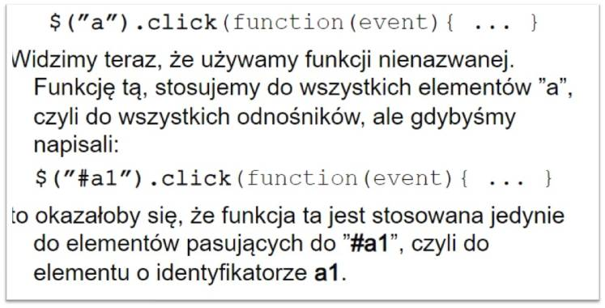
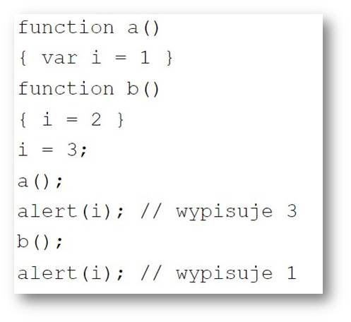
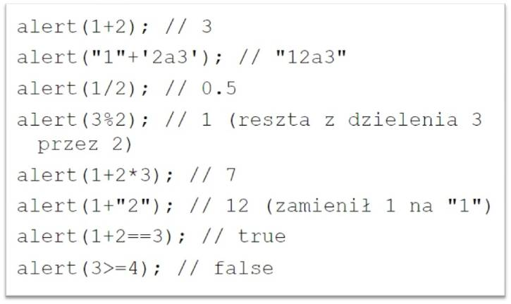
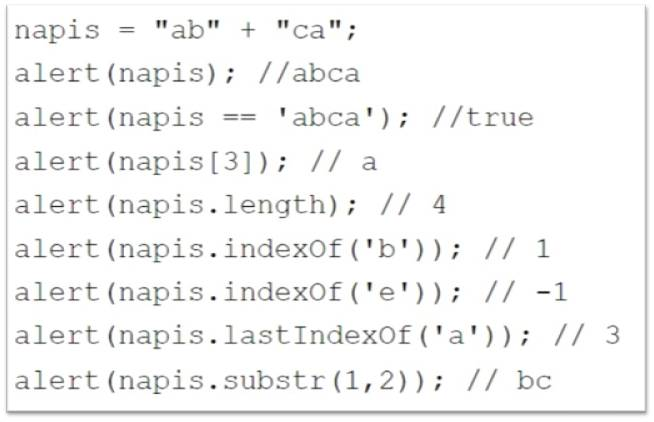

Witaj na podstronie informacji!
Obecny temat to: JavaScript
Funkcje w JS
---
funkcje oznacza słowo kluczowe:
funkcje mogą przyjmować parametry,
funkcje mogą być nazwane:
function wypisz (tekst)
parametry funkcji nie są sprawdzane, więc poprawne zarówno wypisz() jak i wypisz(1, ”a”)
---
Przykład
---

Zmienne
---
Zmienne przechowują wartości dowolnych typów. Jeśli zmienna nie została użyta w programie to ma wartość
Problemem sprawiającym dużo kłopotów jest to, iż wszystkie zmienne są globalne, chyba że zostaną zadeklarowane wewnątrz funkcji za pomocą słowa kluczowego
---
Lokalność zmiennych
---

---
Typy zmiennych
---
Liczby różnią się od napisów.
Napisy zapisujemy ”w cudzysłowach” lub 'tak‘.
Nie musimy przejmować się konwersją liczb całkowitych i zmiennoprzecinkowych.
Operator ”+” dodaje liczby ale łączy (konkatenuje) napisy.
JS sam domyśla się, czy coś powinno być liczbą czy napisem.
Istnieje prawda (true) i fałsz (false).
---
Różne wyrażenia
---

---
Instrukcje JS
---
JavaScript obsługuje wszystkie instrukcje typowe dla języków podobnych do C, C++ i Javy:
---
Napisy
---
- napis[3] – czwarta litera napisu.
- napis.length – długość napisu.
- napis.indexOf('b')) – pierwsze wystąpienie b lub -1 jeśli b w napisie nie występuje.
- napis.lastIndexOf('a') – ostatnie wystąpienie a.
- napis.substr(1,3) – fragment napisu od drugiej litery zawierający trzy znaki.
---
Przykłady użycia napisów
---

---
Obsługa liczb
---
---